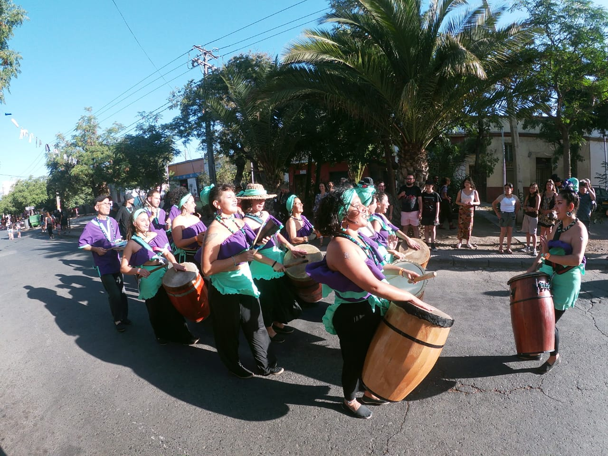
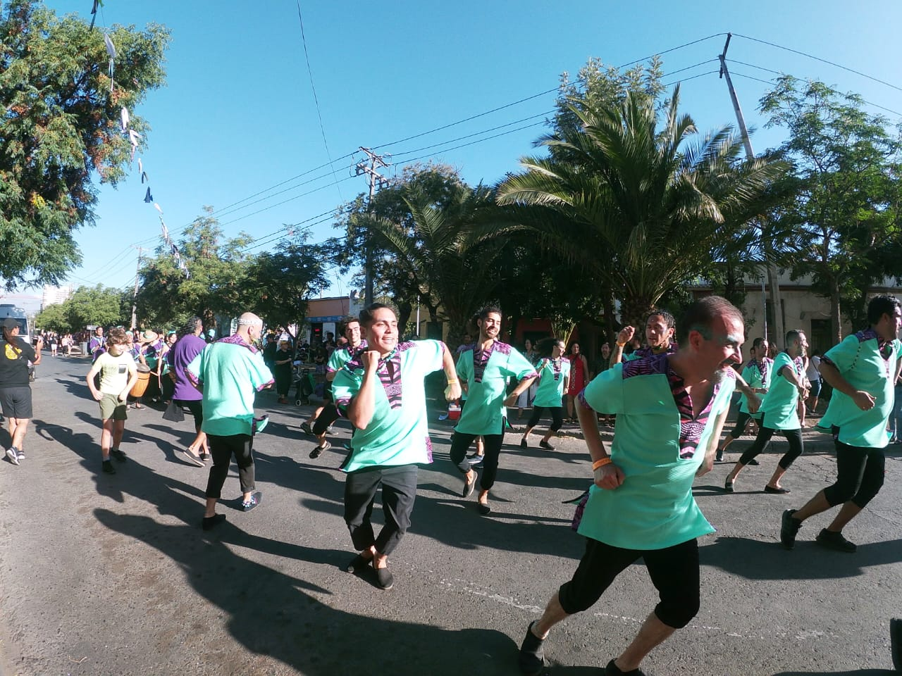
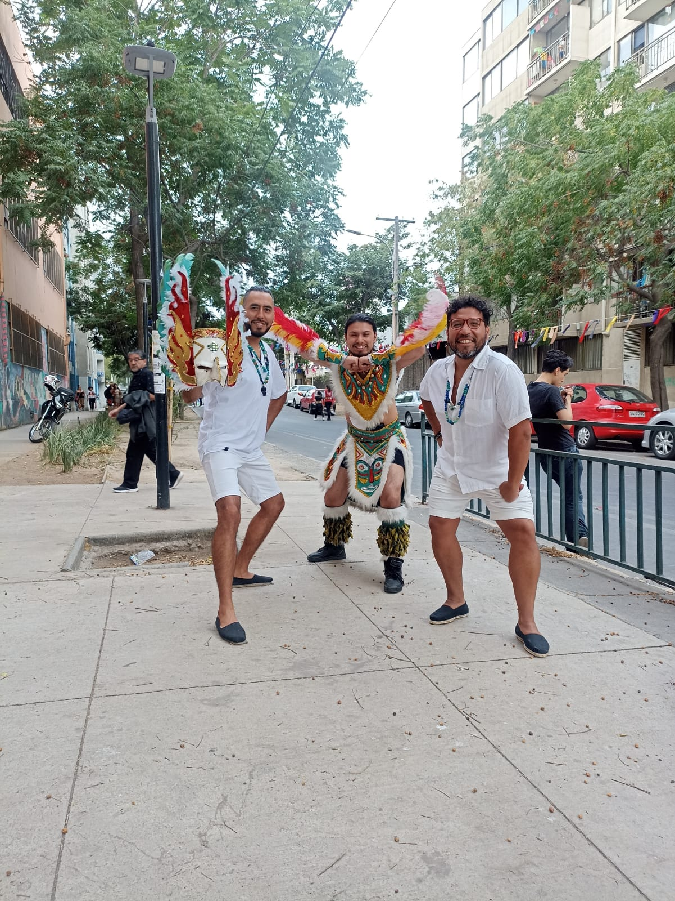
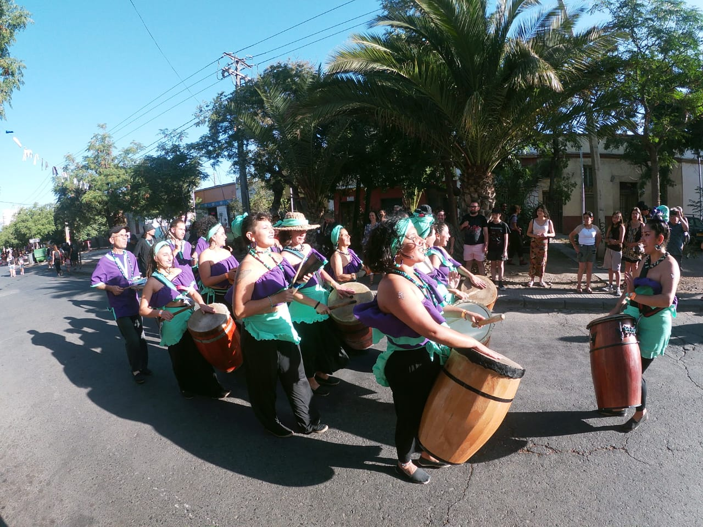
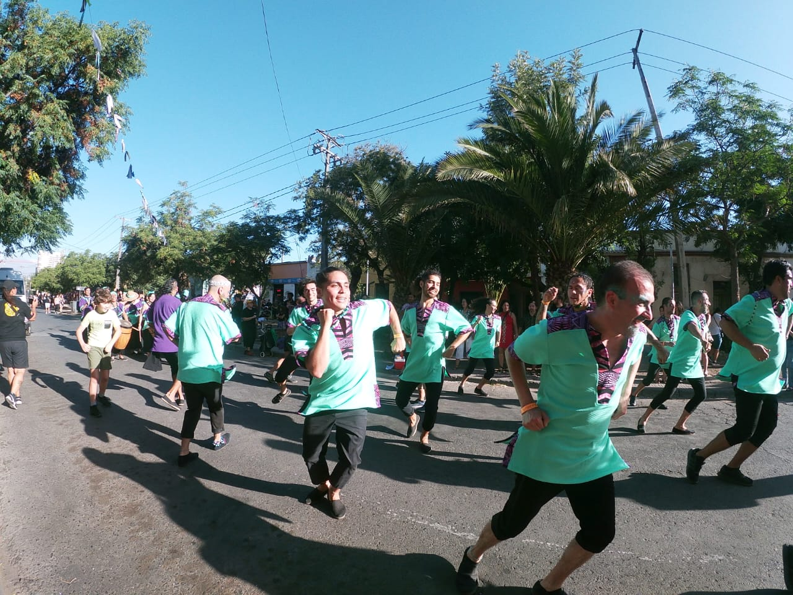
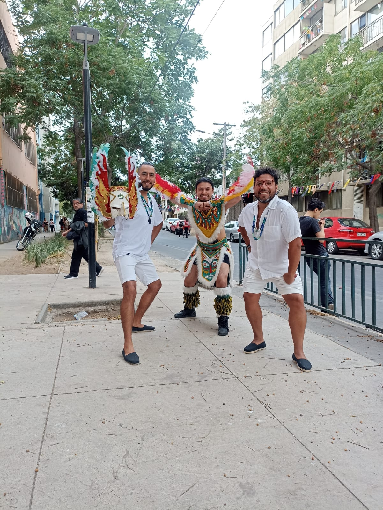

La Agrupación Nuestra Esencia
Cardo Negro es una agrupación de música y danza que nace el año 2018 y busca reflexionar de manera crítica en torno a los roles de género (masculinidades danzantes y femineidades a cargo de la música), promover formas más cuidadosas de vinculación entre las personas a través de estas manifestaciones, estudiando y explorando ritmos y composiciones de raíz afro como el Festejo (Perú) y el Tumbe (Arica).
Actualmente presenta su montaje "De Azapa hacia el Mapocho", que busca promover el trabajo y rescate que han generado las comunidades ariqueñas, sensibilizar en torno a la presencia de la negritud en el territorio nacional, la esclavitud en el Santiago colonial y la necesidad de visibilizar y reivindicar las luchas del pueblo tribal afrodescendiente chileno.
"¡Si la calle retumba, es porque tumbe trae!"
Nuestra Trayectoria Hitos y Evolución
Inicios y Formación (2018)
Cardo Negro nace en 2018 con la visión de fusionar ritmos afroperuanos y afrochilenos, explorando nuevas expresiones de danza y música.
Primeras Presentaciones (2019-2020)
Participación en agrupaciones sociales, territoriales, vecinales, colegios y jardines infantiles, llevando la música y la danza a la comunidad.
Montaje "De Azapa hacia el Mapocho" (2021)
Lanzamiento del montaje principal, una obra que visibiliza la negritud en Chile y reivindica al pueblo afrodescendiente.
Consolidación en Centros Culturales y Festivales
Logramos presentarnos en escenarios importantes como la Corporación Cultural de Recoleta, Centro Cultural Tío Lalo Parra, Centro Gabriela Mistral (GAM) y Festival Womad 2024.
- Corporación Cultural de Recoleta
- Centro Cultural Tío Lalo Parra, Cerrillos.
- Festival Womad, 2024
- Centro Gabriela Mistral (GAM).
- Inauguración Juegos Panamericanos 2023
- Centro Cultural Paine
- Fondas Parque O'Higgins
Carnavales Territoriales de Santiago
Presencia constante en los vibrantes carnavales de Santiago, conectando con las raíces de la comunidad.
- La Bandera, Lo Espejo, Las Araucarias, Los Copihues, Nueva Habana, La Palmilla, Barrio Yungay, Villa Portales, Amar Migrar Maipú, entre otros.
Nuestros Momentos en Imágenes Un Viaje Visual


 







Nuestros Formatos Experiencias a tu medida
Talleres de danza con música en vivo
Intervención experiencial y pedagógica enfocada a adultxs, NNA y familias, con el objetivo de promover la exploración de su corporalidad a través de la danza de raíz afro, concientizar y sensibilizar en la presencia afrodescendiente en nuestra cultura e invitar al cuestionamiento de los roles de género instaurados socialmente. No se requiere de experiencia ni conocimientos previos.
- Equipo: Mínimo 4 personas
- Duración: 40 min a 1.5 horas aprox.
- Participantes: Hasta 25 personas (conversable)
Presentación en escenario
Muestra de cantos, danza y música en vivo con una duración de 30 minutos aprox., transitando por ritmos afroperuanos y/o afro chileno, evidenciando los cambios de roles de género y compartiendo contexto histórico del montaje.
- Equipo: Mínimo 8 personas
- Duración: 30 minutos aprox.
- Contenido: Ritmos afroperuanos y/o afrochilenos, cambios de roles de género, contexto histórico.
Mezcla Taller-Presentación
Muestra de cantos, danza y música en vivo, duración de 30 minutos aprox, terminando con la invitación a participar de un taller práctico de danza (duración mínima de 20 minutos conversable según requerimiento) (tiempo total 1 hora aprox.)
- Equipo: Mínimo 8 personas
- Duración: 1 hora aprox. (30 min show + 20 min taller)
- Contenido: Show completo + taller práctico de danza.
Nuestra Huella Digital Descubre Más

Actividad mes de la danza GAM
Explora nuestra participación en el Centro Gabriela Mistral.

"Cardo Negro llegó" Canal de Youtube
Suscríbete y no te pierdas nuestros videos.

Cardo Negro en Subelaradio
Escucha nuestra entrevista y música en línea.

Video Promocional Oficial
Festival ICUAL - Presentación Taller Liceo Artístico Quilpué.

Registro Carnaval Lo Hermida 2024
Revive la energía de nuestra participación.
¡Contáctanos! Queremos Conocerte
¿Interesado en nuestras presentaciones, talleres o en unirte a la comparsa? ¡Déjanos un mensaje!
Información de Contacto
agrupacioncardonegro@gmail.com
+56937109871